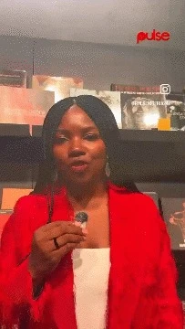
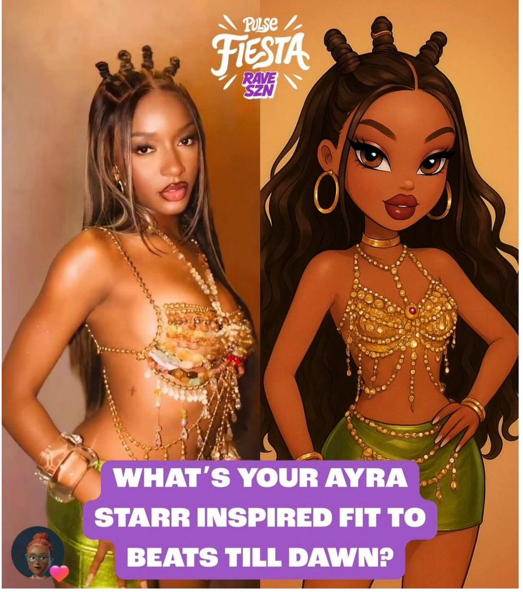

Insight & discovery
Every campaign starts with understanding: who the audience is, what moves them, and the cultural and competitive context around them. That comes before a single creative idea.
Brand, Communications & Partnerships Strategist
I'm Oluwatoni Victoria, Events & Partnerships Manager at Pulse. I work at the intersection of brands, storytelling and partnerships, turning ideas into meaningful connections and experiences.
Brands I've worked with
Point of view
The best brands don't just show up. They show up with intention, a point of view and something worth saying. Strategy is a story your audience believes in. My job is to make sure they do.
Every campaign starts with understanding: who the audience is, what moves them, and the cultural and competitive context around them. That comes before a single creative idea.
Insight becomes a clear framework: the brand story, campaign narrative, content pillars and channel approach. Strategy isn't a document. It's the backbone every piece of content hangs on.
I lead execution end to end, from creative direction and cross-functional coordination to performance tracking. I don't hand off and walk away. I stay until the work delivers.
What I do
Brand strategy, positioning, storytelling, creative direction and content marketing, built on audience insight and cultural context.
Spotting the opportunity, building the relationship and shaping a proposition that gives both partners a commercial and cultural reason to say yes.
Turning ideas and agreements into campaigns, activations and cultural moments that audiences show up for, online and in the room.
Strategic partnerships · 2026
Four collaborations from my work at Pulse, connecting its media, newsletter and creator platforms with art, lifestyle, technology and fashion.
A media partnership linking Pulse's storytelling platforms with one of Africa's leading contemporary art platforms, built to explore the people and ideas shaping the African art ecosystem.

Taking a digital lifestyle community beyond the screen. I led the activation that brought The Juice, Pulse's pop culture newsletter, into Cocktail Village with an interactive branded booth.

A media partnership that put Pulse's platforms inside the conversations shaping Africa's technology, business and creative ecosystem.

A collaboration between The House, Pulse Creator Collective and Lagos Fashion Week at the intersection of fashion, media and community, extended into an experience around the closing party.

Capabilities
Strategy, storytelling and relationships, from someone who stays with the work until it does what it was meant to.
Audience insight, brand narrative and repositioning, like moving Pulse Fiesta from a concert to the December rave.
Campaign frameworks that balance brand equity, audience growth and engagement, plus targeted email with 67–76% open rates.
Direction across digital, social and experiential content, working as brand guardian with design, social and production teams.
Finding the right partners, building the proposition and negotiating collaborations across art, lifestyle, technology and fashion.
Festivals, activations and conferences, connecting what happens in the room with the story online.
Stakeholder management, team leadership, event and project management, product strategy and email marketing. Canva, Figma, Hootsuite, WordPress.
Let's work together →Featured campaign · Pulse Fiesta, 5th edition
I led the brand and creative repositioning of Pulse Fiesta's fifth edition, from audience insight and campaign narrative to the full Rave SZN content ecosystem.


A data-driven content transformation that put audience needs at the centre of everything Pulse creates. "User Needs" focused on what audiences value, "Impact" on meaningful engagement, and "360" on excellence across website, social and video.
I recommended and led POV-style and green-screen video formats across Pulse's Nigeria, Uganda and Côte d'Ivoire markets, producing millions of views and tens of thousands of shares.
Managed branding and communications for Unleashed 4 Takeover 2.0, Nigeria's biggest real estate conference, with 2,500 attendees in person and 1,500 online. Also led Victoria Crest Homes' website revamp and podcast series launch.

A creative content suite for a real estate brand: POV posts that turned Nigerian vernacular and everyday pain points like NEPA and fuel costs into shareable content, plus a CSR art competition.
What people say
"No direction needed, you took up the responsibility. Designs, copy, page management, team collaboration, even client management. The late night calls, anytime of the day you were available, you put your heart into the event. That event would not have been this MAD without you, and that's facts. I'm really grateful to have you on my team. You make working together so easy."
"You were a key member of our communications team and my brilliant and dedicated assistant. I want to appreciate you for your remarkable contributions, your commitment, your tireless efforts, and your kindness. All these made you an invaluable member of our team. Your strength, dedication, and grace will carry you far."

About
I'm a brand, communications and partnerships strategist, currently Events & Partnerships Manager at Pulse. My work spans brand strategy, creative direction, content marketing and strategic partnerships, with a strong focus on how brands show up in real life: the experiences and emotions they create, not just what they say.
I've led campaigns end to end, from narrative and creative direction to execution and performance. At Pulse, I moved content from reactive posting to intentional brand narratives, strengthening its position as a credible voice on youth culture, entertainment and the conversations that matter. Today I also build the partnerships that put brands, media and culture in the same room. I'm drawn to brands that value emotion, community and consistency, and I bring a balance of strategic thinking, creative intuition and commercial awareness to every project.
Let's work together
Building a brand, a partnership or an experience that deserves to be felt, not just seen? Let's talk.